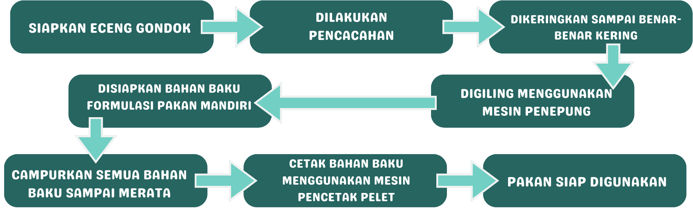
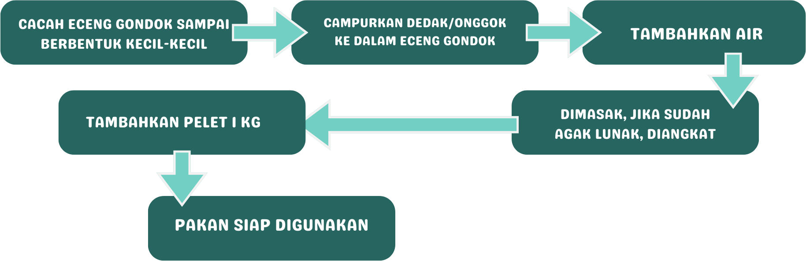

KKN ITERA 204
Desa Kedung Ringin
Lampung Timur


Oleh : Kelompok KKN 204 Desa Kedungringin
Pembuatan pakan ikan dengan bahan dasar eceng gondok
didorong oleh berbagai pertimbangan yang mencakup aspek ekologi, keberlanjutan,
dan efisiensi produksi. Eceng gondok, sebagai tanaman air lokal yang dapat tumbuh
dengan cepat di perairan dangkal, seperti sungai, danau, atau kolam tambak, menawarkan
potensi keberlanjutan yang tinggi. Penggunaan tanaman ini tidak hanya mendukung
ekosistem lokal tetapi juga membantu mengendalikan pertumbuhan invasifnya,
memberikan solusi positif terhadap tantangan lingkungan. Selain itu, eceng gondok
memiliki kandungan nutrisi yang baik, termasuk protein, serat, dan beberapa mineral,
yang dapat meningkatkan kualitas pakan ikan. Dengan memanfaatkan tanaman ini, produksi
pakan ikan juga dapat berkontribusi pada manajemen limbah organik dan mengurangi polusi
air. Selain manfaat ekologisnya, penggunaan eceng gondok dalam pakan ikan juga dapat
menjadi alternatif biaya yang lebih efisien, memungkinkan diversifikasi sumber daya
pakan dan meningkatkan ketahanan terhadap fluktuasi harga dan ketersediaan bahan baku
lainnya. Secara keseluruhan, pembuatan pakan ikan dengan eceng gondok mencerminkan
pendekatan berkelanjutan yang mempertimbangkan aspek ekonomi, lingkungan, dan sosial
dalam konteks pertanian perikanan.
Terdapat 3 Alternatif dalam pembuatan pakan ikan berbahan dasar eceng gondok yaitu :
Gambar Eceng Gondok
Pada alternatif 1, alat dan bahan yang dibutuhkan yaitu :
1. Eceng Gondok
2. Dedak/Onggok
3. Air Rebusan Ikan/Limbah Ikan
4. Penggiling
Cara Pembuatan Alternatif 1
Pada alternatif 2, alat dan bahan yang dibutuhkan yaitu :
1. Eceng Gondok
2. Mesin Penepung
3. Mesin Pencetak Pelet
Selain itu, terdapat bahan baku pakan mandiri yaitu :
1. Tepung Eceng Gondok (3 kg)
2. Tepung Ikan Rucah/Ampas Tahu (4 kg)
3. Vitamin Mix (1 kg)
4. Tapioka (1,3 kg)
5. Dedak Halus (1,5 kg)
6. Molase/Probiotik atau Minyak Ikan (1 kg)
7. Minyak Sayur Secukupnya
Cara Pembuatan Alternatif 2

Pada alternatif 3, alat dan bahan yang dibutuhkan yaitu :
1. Eceng Gondok
2. Dedak/Onggok
3. Air
4. Pelet (1 kg)
Cara Pembuatan Alternatif 3
